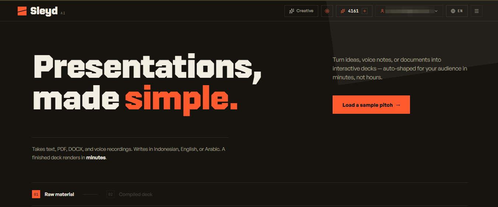
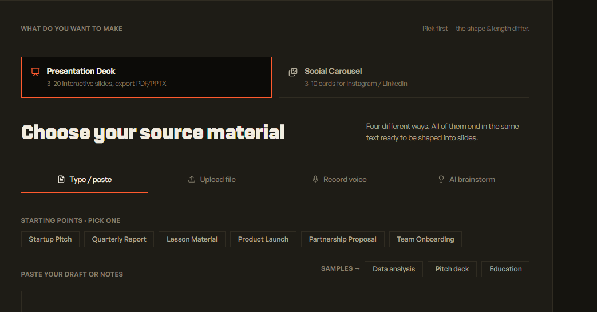

Most automations work on the day they are demoed. I build the other part — the
retries, the guards, and the recovery path that catches a job when it dies at three in the
morning. Sleyd runs on one of mine, live in daily production.
SLEYD · 5 WORKFLOWS · ~68 NODES · 27 IN THE CORE PIPELINE
What is on the bench.
The happy path is the easy half. What I get paid for is what a system does at
the moment something upstream stops answering.
n8n pipelines
Webhooks, sub-workflows, async callbacks. Retries and rate limits in the first version.
LLM wiring
Structured JSON output, fallback across models, and a sanitizer standing between the model and your users.
System integration
Signature-checked webhooks and a backend that owns job state, so the app and the workflow never disagree about what happened.
Data automation
Data profiling, cleaning, KPIs and notebook generation, from five common file formats to a reviewable output.
Rescue work
Reading an automation that already broke: where it fails, what it wastes, what it costs to hold.
Sleyd
Committedsleyd.com · live · solo build
Raw material goes in — a brief, a PDF, a voice recording — and a finished
interactive deck comes back at its own URL, exportable to PPTX or PDF. I designed, built, and operate
all of it: the interface, the backend, and the five n8n workflows that connect them.

Sleyd · signed-in home fig. 01

Choosing the source material fig. 02
Orchestration
5 n8n workflows, ~68 nodes
Core pipeline
27 nodes
AI layer
Multi-model fallback, 4 deep
Backend
~4,800 lines, Express + Firebase
Input
Text, PDF, DOCX, audio
Webhooks
Signed, server-verified inbound calls
Interface
Indonesian, English, Arabic
Usage to date
Not instrumented UNAVAILABLE
When it breaks
The app and the n8n workflow only agree on one thing: a job ID and a status. Sleyd writes
that job to its own database before n8n ever starts, so the frontend is never guessing —
it polls a state the backend owns, not the workflow. If n8n goes quiet for fifteen minutes,
the backend closes the job out on its own; if the workflow's result lands late anyway, it
reconciles the record instead of leaving two systems disagreeing about what happened.
Three exported n8n form workflows sit alongside the live Sleyd product: one for
presentations, one for scrollytelling, and one for data analysis. Their files show the designed
steps; they do not contain measured adoption or time-saved figures.
n8n · 35 nodesWORKFLOW EXPORT
Sleyd Presentation · form pipeline
Problem. Uploaded documents and revisions need a coherent slide plan before a page is rendered. Built. PDF, DOCX and PPTX extraction; input checks; content classification; per-slide outline review and edits; image retrieval; HTML sanitation; Vercel deployment and aliasing. Outcome. The export defines review and validation checkpoints from source material to publishable HTML. It does not report production usage.
Problem. A long visual story needs consistent structure across sections and room for human edits. Built. Input sanitation, AI outline review per section, edits, looped section rendering, image retrieval, HTML sanitation and a Vercel deploy path. Outcome. Planning, section rendering and publishing are separated into inspectable stages. The export does not include usage metrics.
Problem. Mixed data files need cleaning, profiling and KPI preparation before anyone can tell the story. Built. CSV, TSV, XLS, XLSX and JSON routing; health audit; cleaning and aggregation; AI narrative; HTML scrollytelling deck; Jupyter notebook; artifact checks and email delivery. Outcome. One form-backed design produces a visual deck and an inspectable notebook. The export does not establish runtime savings or client deployment.
Earlier client and campaign analysis. Public slide decks and repositories show the methods; the named client cases also appear in the data portfolio.
2024 · Election campaignDone
Voter database matching
Matched two voter lists with PostgreSQL exact joins, then pg_trgm similarity at 0.55 for near matches. The 2024 campaign export contained 993 matched records across six neighborhoods; the process took minutes instead of days of manual reconciliation.
2,430 transactions analysed end to end. Churn came out at 29% against a 3.45-month average
customer lifetime — short enough that the recommendation became retention, not acquisition.
Reconciled 2013–2023 purchase-order histories to expose customer concentration and volatile annual sales. In the 2013–2017 portion, 24 accounts held 58.5% of revenue; the finding supported a core-account protection and diversification plan.
I spent seven years as a laboratory analyst at Pertamina Lubricants, running quality control
to ISO and ASTM methods. The work was exact and unglamorous: you never got to claim a result,
you had to show the method that produced it.
That habit is most of what I brought to automation. I write down what a system should do
when it fails before I write what it does when it works, which is why the first thing I can
show you about Sleyd is how it recovers a dead job, not its homepage.
Alongside Sleyd, I analyzed B2B customer and revenue histories for PT Gagas Envirotek and
PT Andaru Persada Mandiri, and matched voter records for a 2024 campaign. The methods and
measured results are documented in my data portfolio.
Nur Rahman Shalahudin fig. 03
Based in
Depok, Indonesia
Works
Remote, freelance or contract
Automation
n8n, webhooks, async callbacks
Code
Python, TypeScript, SQL
Cloud
Firebase, Vercel, VPS + Nginx
Speaks
Indonesian, English
Got something that breaks quietly?
Tell me what it does when it fails — that part is usually the interesting one. Messages come
straight to me, not to an inbox somebody else screens.